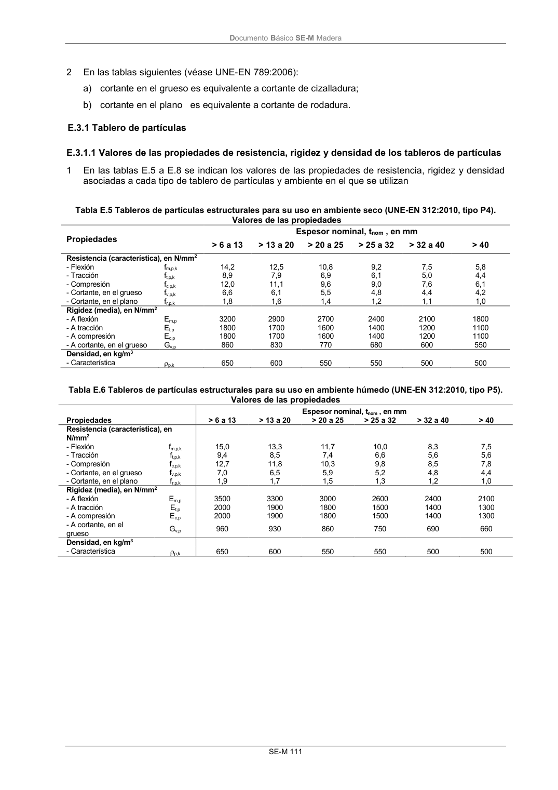

DB-SE-M · Fragmento de PDF p117 · versión 2019-12-20 · capa oficial
Formatos: JSON compacto · Markdown · PDF fuente
Ámbito del documento · texto del ámbito · documento y tablas
ID técnico a0190 · PDF pág. 117 · jerarquía no validada por persona · no es capítulo: sin_linea_de_encabezado · padre: raíz · literal original en el contenido: «E.3.1 Tablero de partículas E.3.1.1 Valores de las propiedades de resistencia, rigidez y densidad de los tableros de partículas»
E.3.1 Tablero de partículas E.3.1.1 Valores de las propiedades de resistencia, rigidez y densidad de los tableros de partículas E.3.1.1 Valores de las propiedades de resistencia, rigidez y densidad de los tableros de partículas 1 En las tablas E.5 a E.8 se indican los valores de las propiedades de resistencia, rigidez y densidad asociadas a cada tipo de tablero de partículas y ambiente en el que se utilizan Tabla E.5 Tableros de partículas estructurales para su uso en ambiente seco (UNE-EN 312:2010, tipo P4).

PDF fuente redistribuible: copia fiel enlazada en esta página (SHA256 verificado).